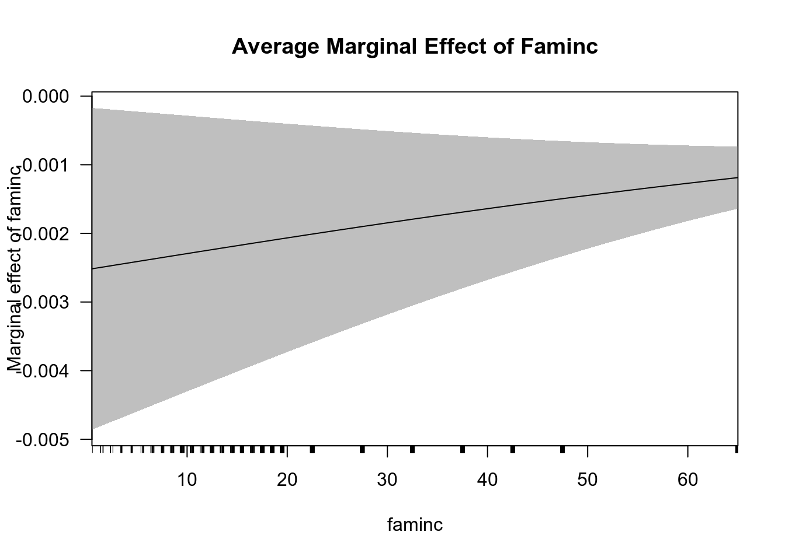

Коан 4 Модель бинарного выбора
=======Коан 3 Модель бинарного выбора
>>>>>>> 2d5797527741ec10cca1ef2ca525a6bab26d4734Мини-теория:
Линейная вероятностная модель Можно оценить вероятность бинарной зависимой переменной принимать определённое значение (чаще, 1). Линейная вероятностная модель имеет вид:
\[ P(y_i = 1) = x_i^T \cdot \beta + \varepsilon_i \]
Однако такой подход обладает существенными недостатками: нереалистичное значение оцененной вероятности, ошибки, распределённые не нормально и гетероскедастичность, поэтому есть необходимость оценивания логит- и пробит- моделей.
Логит - модель <<<<<<< HEAD Предполагается, что существует скрытая (латентная) переменная, для которой строится модель, \[y^*_i = x_i^T \cdot \beta + \varepsilon_i\], так, что: \[ \begin{equation*} ======= Предполагается, что существует скрытая (латентная) переменная, для которой строится модель, \[ y^*_i = x_i^T \cdot \beta + \varepsilon_i, \]
так, что: \[ >>>>>>> 2d5797527741ec10cca1ef2ca525a6bab26d4734 Y_i = \begin{cases} 1, &\text{если ${y_i}^* \geqslant 0$}\\ 0, &\text{если ${y_i}^* < 0$} \end{cases} <<<<<<< HEAD \end{equation*} \]
\[\varepsilon_i \sim logistic, \\f(t) = \frac{e^{-t}}{(1 + e^{-t})^2}\] LR-тест
В текущем коане будем тестировать \[H_0: \beta_{white} = 0\] против \[H_a: \beta_{white} \neq 0\].
Статистика LR-теста имеет вид: \[2 \cdot (\ln(L) - \ln(L_{H_0})) \sim \chi^2_r\], где \(ln(L)\) - логарифм функции правдоподобия, \(ln(L_{H_0})\) - логарифм функции правдоподобия со значениями параметров из основной гипотезы, r - количество ограничений в основной гипотезе.
Пробит-модель Также предполагается, что существует скрытая (латентная) переменная, для которой строится модель, \[y^*_i = x_i^T \cdot \beta + \varepsilon_i\], так, что: \[ \begin{equation*} ======= \]
\[ \varepsilon_i \sim logistic, \\f(t) = \frac{e^{-t}}{(1 + e^{-t})^2} \] LR-тест
В текущем коане будем тестировать \(H_0: \beta_{white} = 0\) против \(H_a: \beta_{white} \neq 0\).
Статистика LR-теста имеет вид: \[ 2 \cdot (\ln(L) - \ln(L_{H_0})) \sim \chi^2_r, \] где \(\ln(L)\) — логарифм функции правдоподобия, \(\ln(L_{H_0})\) — логарифм функции правдоподобия со значениями параметров из основной гипотезы, r - количество ограничений в основной гипотезе.
Пробит-модель Также предполагается, что существует скрытая (латентная) переменная, для которой строится модель, \[ y^*_i = x_i^T \cdot \beta + \varepsilon_i, \] так, что: \[ >>>>>>> 2d5797527741ec10cca1ef2ca525a6bab26d4734 Y_i = \begin{cases} 1, &\text{если ${y_i}^* \geqslant 0$}\\ 0, &\text{если ${y_i}^* < 0$} \end{cases} <<<<<<< HEAD \end{equation*} \]
\[\varepsilon_i \sim N(0; 1), \\ f(z) = \frac{1}{\sqrt{2 \pi}} \cdot \int_{- \infty}^{z} e^{- \frac{t^2}{2}} dt\]
======= \]Сейчас попробуем подружиться с моделями бинарного выбора на основе данных
bwght.dta, где зависимая переменная отражает, является индивид курильщиком или нет, а в качестве независимых переменных представлены характеристики индивида: количество выкуриваемых сигарет, семейный доход, налог на сигареты, цена сигарет, образование отца и матери, паритет, цвет кожи.
\[ \varepsilon_i \sim N(0; 1), \\ f(z) = \frac{1}{\sqrt{2 \pi}} \cdot \int_{- \infty}^{z} e^{- \frac{t^2}{2}} dt \]
Сейчас попробуем подружиться с моделями бинарного выбора на основе данных
bwght.dta, где зависимая переменная отражает, является индивид курильщиком или нет, а в качестве независимых переменных представлены характеристики индивида: количество выкуриваемых сигарет, семейный доход, налог на сигареты, цена сигарет, образование отца и матери, паритет, цвет кожи.
3.1 R
Загрузим необходимы пакеты.
library(rio) # импорт и экспорт данных в разных форматах
library(tidyverse) # графики и манипуляции с данными
library(skimr) # описательные статистики
library(mfx) # нахождение предельных эффектов
library(margins) # визуализация предельных эффектов
library(lmtest) # проведение тестов
library(plotROC) # построение ROC-кривой
library(caret) # confusion-матрица
library(texreg) # вывод результатов регрессии в тех и htmlИмпортируем исследуемые данные.
Рассмотрим описательные статистики по всем переменным: количество выкуриваемых сигарет, семейный доход, налог на сигареты, цена сигарет, образование отца и матери, паритет, цвет кожи.
| Name | data |
| Number of rows | 1388 |
| Number of columns | 14 |
| _______________________ | |
| Column type frequency: | |
| numeric | 14 |
| ________________________ | |
| Group variables | None |
Variable type: numeric
| skim_variable | n_missing | complete_rate | mean | sd | p0 | p25 | p50 | p75 | p100 | hist |
|---|---|---|---|---|---|---|---|---|---|---|
| faminc | 0 | 1.00 | 29.03 | 18.74 | 0.50 | 14.50 | 27.50 | 37.50 | 65.00 | ▆▇▇▃▅ |
| cigtax | 0 | 1.00 | 19.55 | 7.80 | 2.00 | 15.00 | 20.00 | 26.00 | 38.00 | ▂▆▇▇▁ |
| cigprice | 0 | 1.00 | 130.56 | 10.24 | 103.80 | 122.80 | 130.80 | 137.00 | 152.50 | ▂▆▇▇▂ |
| bwght | 0 | 1.00 | 118.70 | 20.35 | 23.00 | 107.00 | 120.00 | 132.00 | 271.00 | ▁▇▆▁▁ |
| fatheduc | 196 | 0.86 | 13.19 | 2.75 | 1.00 | 12.00 | 12.00 | 16.00 | 18.00 | ▁▁▂▇▅ |
| motheduc | 1 | 1.00 | 12.94 | 2.38 | 2.00 | 12.00 | 12.00 | 14.00 | 18.00 | ▁▁▂▇▃ |
| parity | 0 | 1.00 | 1.63 | 0.89 | 1.00 | 1.00 | 1.00 | 2.00 | 6.00 | ▇▁▁▁▁ |
| male | 0 | 1.00 | 0.52 | 0.50 | 0.00 | 0.00 | 1.00 | 1.00 | 1.00 | ▇▁▁▁▇ |
| white | 0 | 1.00 | 0.78 | 0.41 | 0.00 | 1.00 | 1.00 | 1.00 | 1.00 | ▂▁▁▁▇ |
| cigs | 0 | 1.00 | 2.09 | 5.97 | 0.00 | 0.00 | 0.00 | 0.00 | 50.00 | ▇▁▁▁▁ |
| lbwght | 0 | 1.00 | 4.76 | 0.19 | 3.14 | 4.67 | 4.79 | 4.88 | 5.60 | ▁▁▂▇▁ |
| bwghtlbs | 0 | 1.00 | 7.42 | 1.27 | 1.44 | 6.69 | 7.50 | 8.25 | 16.94 | ▁▇▆▁▁ |
| packs | 0 | 1.00 | 0.10 | 0.30 | 0.00 | 0.00 | 0.00 | 0.00 | 2.50 | ▇▁▁▁▁ |
| lfaminc | 0 | 1.00 | 3.07 | 0.92 | -0.69 | 2.67 | 3.31 | 3.62 | 4.17 | ▁▁▂▆▇ |
Заметим существование пропущенных переменных у fatheduc, motheduc.
Будем анализировать только те значения, у которых нет пропущенных наблюдений.
Для этого создадим новый dataframe, data_2, в котором отсутствуют пропущенные значения.
Посмотрим на его описательные статистики.
| Name | data_2 |
| Number of rows | 1191 |
| Number of columns | 14 |
| _______________________ | |
| Column type frequency: | |
| numeric | 14 |
| ________________________ | |
| Group variables | None |
Variable type: numeric
| skim_variable | n_missing | complete_rate | mean | sd | p0 | p25 | p50 | p75 | p100 | hist |
|---|---|---|---|---|---|---|---|---|---|---|
| faminc | 0 | 1 | 32.22 | 17.96 | 0.50 | 18.50 | 27.50 | 42.50 | 65.00 | ▃▇▇▃▅ |
| cigtax | 0 | 1 | 19.60 | 7.86 | 2.00 | 15.00 | 20.00 | 26.00 | 38.00 | ▂▆▇▇▂ |
| cigprice | 0 | 1 | 130.71 | 10.35 | 103.80 | 122.80 | 130.80 | 137.00 | 152.50 | ▂▆▇▇▃ |
| bwght | 0 | 1 | 119.53 | 20.14 | 23.00 | 108.00 | 120.00 | 132.00 | 271.00 | ▁▇▇▁▁ |
| fatheduc | 0 | 1 | 13.19 | 2.74 | 1.00 | 12.00 | 12.00 | 16.00 | 18.00 | ▁▁▂▇▅ |
| motheduc | 0 | 1 | 13.13 | 2.42 | 2.00 | 12.00 | 12.00 | 15.00 | 18.00 | ▁▁▂▇▃ |
| parity | 0 | 1 | 1.61 | 0.87 | 1.00 | 1.00 | 1.00 | 2.00 | 6.00 | ▇▁▁▁▁ |
| male | 0 | 1 | 0.52 | 0.50 | 0.00 | 0.00 | 1.00 | 1.00 | 1.00 | ▇▁▁▁▇ |
| white | 0 | 1 | 0.84 | 0.36 | 0.00 | 1.00 | 1.00 | 1.00 | 1.00 | ▂▁▁▁▇ |
| cigs | 0 | 1 | 1.77 | 5.34 | 0.00 | 0.00 | 0.00 | 0.00 | 40.00 | ▇▁▁▁▁ |
| lbwght | 0 | 1 | 4.77 | 0.19 | 3.14 | 4.68 | 4.79 | 4.88 | 5.60 | ▁▁▂▇▁ |
| bwghtlbs | 0 | 1 | 7.47 | 1.26 | 1.44 | 6.75 | 7.50 | 8.25 | 16.94 | ▁▇▇▁▁ |
| packs | 0 | 1 | 0.09 | 0.27 | 0.00 | 0.00 | 0.00 | 0.00 | 2.00 | ▇▁▁▁▁ |
| lfaminc | 0 | 1 | 3.28 | 0.72 | -0.69 | 2.92 | 3.31 | 3.75 | 4.17 | ▁▁▁▅▇ |
Сгенерируем переменную smoke, отражающую состояние отдельного индивида: smoke = 1, если индивид курит (то есть количество выкуриваемых им сигарет положительно), smoke = 0 – если индивид не курит.
Построим модель линейной вероятности. Сохраним результат под lin_prob_model.
lin_prob_model = lm(smoke ~ 1 + faminc + cigtax + cigprice + fatheduc + motheduc + parity + white,
data = data_2)
summary(lin_prob_model)
Call:
lm(formula = smoke ~ 1 + faminc + cigtax + cigprice + fatheduc +
motheduc + parity + white, data = data_2)
Residuals:
Min 1Q Median 3Q Max
-0.46295 -0.17696 -0.11495 -0.02127 1.01628
Coefficients:
Estimate Std. Error t value Pr(>|t|)
(Intercept) 0.4297071 0.2270444 1.893 0.0587 .
faminc -0.0014813 0.0006325 -2.342 0.0193 *
cigtax 0.0008334 0.0026320 0.317 0.7516
cigprice 0.0007472 0.0019954 0.374 0.7081
fatheduc -0.0064880 0.0047493 -1.366 0.1722
motheduc -0.0242416 0.0053373 -4.542 6.14e-06 ***
parity 0.0019565 0.0110725 0.177 0.8598
white 0.0471603 0.0273790 1.723 0.0852 .
---
Signif. codes: 0 '***' 0.001 '**' 0.01 '*' 0.05 '.' 0.1 ' ' 1
Residual standard error: 0.3318 on 1183 degrees of freedom
Multiple R-squared: 0.06448, Adjusted R-squared: 0.05895
F-statistic: 11.65 on 7 and 1183 DF, p-value: 2.184e-14Посмотрим на число совпадений прогнозных и исходных значений.
Для этого оценим предсказанные значения модели линейной вероятности. Сохраним их как переменную predictions_lin_prob_model.
Если прогнозное значение выше 0.5 (порог отсечения, по дефолту, равный 0.5), то классифицируем наблюдаемого индивида как курильщика (smoke_ols = 1).
Посмотрим на число совпадений исходных и прогнозных данных.
Генерируем smoke_ols как 1, если вероятность по модели больше 0.5 и 0, если она меньше 0.5.
Число совпадений данных и прогноза модели линейной вероятности:
[1] 1030Известно, что модель линейной вероятности обладает значительными недостатками, поэтому оценим P(smoke=1|x), и построим логит– и пробит– модели.
Построим логит-модель и сохраним результат оцененной модели как logit_model.
logit_model = glm(smoke ~ 1 + faminc + cigtax + cigprice + fatheduc + motheduc + parity + white,
x = TRUE,
data = data_2,
family = binomial(link = "logit"))
summary(logit_model)
Call:
glm(formula = smoke ~ 1 + faminc + cigtax + cigprice + fatheduc +
motheduc + parity + white, family = binomial(link = "logit"),
data = data_2, x = TRUE)
Deviance Residuals:
Min 1Q Median 3Q Max
-1.5699 -0.5878 -0.4379 -0.2854 2.6434
Coefficients:
Estimate Std. Error z value Pr(>|z|)
(Intercept) 0.960628 2.083625 0.461 0.64477
faminc -0.017142 0.006401 -2.678 0.00741 **
cigtax 0.013859 0.024435 0.567 0.57058
cigprice 0.004156 0.018280 0.227 0.82014
fatheduc -0.054616 0.041813 -1.306 0.19148
motheduc -0.224467 0.049228 -4.560 5.12e-06 ***
parity -0.008435 0.097275 -0.087 0.93090
white 0.436632 0.260283 1.678 0.09344 .
---
Signif. codes: 0 '***' 0.001 '**' 0.01 '*' 0.05 '.' 0.1 ' ' 1
(Dispersion parameter for binomial family taken to be 1)
Null deviance: 943.55 on 1190 degrees of freedom
Residual deviance: 862.11 on 1183 degrees of freedom
AIC: 878.11
Number of Fisher Scoring iterations: 5Так как коэффициенты логит- и пробит- моделей плохо интерпретируются, поскольку единицы измерения латентной переменной определить сложно, посчитаем предельные эффекты, то есть изменение вероятности решения курить с изменением фактора на 1 единицу.
Для предельного эффекта в средних значениях факторов:
Call:
logitmfx(formula = smoke ~ 1 + faminc + cigtax + cigprice + fatheduc +
motheduc + parity + white, data = data_2, atmean = TRUE)
Marginal Effects:
dF/dx Std. Err. z P>|z|
faminc -0.00168111 0.00061396 -2.7382 0.006178 **
cigtax 0.00135920 0.00239324 0.5679 0.570081
cigprice 0.00040759 0.00179294 0.2273 0.820165
fatheduc -0.00535620 0.00409569 -1.3078 0.190953
motheduc -0.02201350 0.00469099 -4.6927 2.696e-06 ***
parity -0.00082727 0.00953824 -0.0867 0.930885
white 0.03815415 0.02011210 1.8971 0.057818 .
---
Signif. codes: 0 '***' 0.001 '**' 0.01 '*' 0.05 '.' 0.1 ' ' 1
dF/dx is for discrete change for the following variables:
[1] "white"Интерпретация предельных эффектов (на примере переменной семейного дохода): при увеличении семейного дохода в среднем на 1 единицу при остальных неизменных факторах, вероятность стать курильщиком уменьшается в среднем на 0.18%.
Визуализируем предельный эффект для семейного дохода:

Для определения качества модели построим классификационную матрицу.
Для этого сначала вычислим предсказания логит-модели, predictions_logit_model. Так как результат не бинарный, то введём порог отсечения, равный 0.5.
Назовём бинарный результат smoke_logit:
Построим классификационную матрицу.
При возникновении ошибок аргументов, в частности, при несовпадении их размера или типа, можно воспользоваться функцией as.factor().
Confusion Matrix and Statistics
Reference
Prediction FALSE TRUE
FALSE 1029 161
TRUE 1 0
Accuracy : 0.864
95% CI : (0.8432, 0.883)
No Information Rate : 0.8648
P-Value [Acc > NIR] : 0.5546
Kappa : -0.0017
Mcnemar's Test P-Value : <2e-16
Sensitivity : 0.9990
Specificity : 0.0000
Pos Pred Value : 0.8647
Neg Pred Value : 0.0000
Prevalence : 0.8648
Detection Rate : 0.8640
Detection Prevalence : 0.9992
Balanced Accuracy : 0.4995
'Positive' Class : FALSE
Качество модели также можно проанализировать с помощью ROC-кривой, отражающей зависимость доли верных положительно классифицируемых наблюдений (sensitivity) от доли ложных положительно классифицируемых наблюдений (1-specifity).
Построим ROC-кривую для логит-модели:
basicplot = ggplot(data_2, aes(m = predictions_logit_model, d = data_2$smoke)) + geom_roc()
basicplot + annotate("text", x = .75, y = .25,
label = paste("AUC =", round(calc_auc(basicplot)$AUC, 2)))Площадь под кривой обозначается как AUC. Она показывает качество классификации. Соответственно, чем выше AUC, тем лучше построенная модель.
Сейчас проанализируем правильность спецификации логит-модели. Может быть, лучше будет убрать какую-нибудь переменную?
Рассмотрим логит-модель, не учитывающую переменную white.
Сохраним эту модель под названием logit_model_new.
Сравним модели logit_model и logit_model_new с помощью теста максимального правдоподобия (likelihood ratio test).
Likelihood ratio test
Model 1: smoke ~ 1 + faminc + cigtax + cigprice + fatheduc + motheduc +
parity + white
Model 2: smoke ~ 1 + faminc + cigtax + cigprice + fatheduc + motheduc +
parity
#Df LogLik Df Chisq Pr(>Chisq)
1 8 -431.06
2 7 -432.55 -1 2.9988 0.08333 .
---
Signif. codes: 0 '***' 0.001 '**' 0.01 '*' 0.05 '.' 0.1 ' ' 1p-value = 0.08 в LR-тесте.
Следовательно, основная гипотеза о том, что переменная white не влияет на решение стать курильщиком, не отвергается на 5% уровне значимости.
Сейчас посмотрим на пробит-модель. Скрытая переменная в этой модели распределена стандартно нормально: \[ f(t) = \frac{1 \cdot e^{\frac{-t^2}{2}}}{\sqrt{2 \cdot \pi}} \]
Построим пробит-модель.
probit_model = glm(smoke ~ 1 + faminc + cigtax + cigprice + fatheduc + motheduc + parity + white, data = data_2, family = binomial(link = "probit"))
summary(probit_model)
Call:
glm(formula = smoke ~ 1 + faminc + cigtax + cigprice + fatheduc +
motheduc + parity + white, family = binomial(link = "probit"),
data = data_2)
Deviance Residuals:
Min 1Q Median 3Q Max
-1.5255 -0.5947 -0.4376 -0.2607 2.7564
Coefficients:
Estimate Std. Error z value Pr(>|z|)
(Intercept) 0.393063 1.130957 0.348 0.72818
faminc -0.008873 0.003376 -2.628 0.00858 **
cigtax 0.005892 0.013245 0.445 0.65643
cigprice 0.003561 0.009930 0.359 0.71987
fatheduc -0.034593 0.023160 -1.494 0.13527
motheduc -0.125693 0.027090 -4.640 3.49e-06 ***
parity -0.003052 0.053610 -0.057 0.95460
white 0.242348 0.140052 1.730 0.08356 .
---
Signif. codes: 0 '***' 0.001 '**' 0.01 '*' 0.05 '.' 0.1 ' ' 1
(Dispersion parameter for binomial family taken to be 1)
Null deviance: 943.55 on 1190 degrees of freedom
Residual deviance: 858.93 on 1183 degrees of freedom
AIC: 874.93
Number of Fisher Scoring iterations: 5Вычисление предельных эффектов и их интерпретация, построение классификационной матрицы и ROC-кривой и LR-тест проводятся аналогично выполненным в логит-модели.
Выведем сравнительную таблицу для построенных моделей.
screenreg(list(lin_prob_model, logit_model, probit_model),
custom.model.names = c("Модель линейной вероятности", "Логит-модель", "Пробит-модель"))
==========================================================================
Модель линейной вероятности Логит-модель Пробит-модель
--------------------------------------------------------------------------
(Intercept) 0.43 0.96 0.39
(0.23) (2.08) (1.13)
faminc -0.00 * -0.02 ** -0.01 **
(0.00) (0.01) (0.00)
cigtax 0.00 0.01 0.01
(0.00) (0.02) (0.01)
cigprice 0.00 0.00 0.00
(0.00) (0.02) (0.01)
fatheduc -0.01 -0.05 -0.03
(0.00) (0.04) (0.02)
motheduc -0.02 *** -0.22 *** -0.13 ***
(0.01) (0.05) (0.03)
parity 0.00 -0.01 -0.00
(0.01) (0.10) (0.05)
white 0.05 0.44 0.24
(0.03) (0.26) (0.14)
--------------------------------------------------------------------------
R^2 0.06
Adj. R^2 0.06
Num. obs. 1191 1191 1191
RMSE 0.33
AIC 878.11 874.93
BIC 918.77 915.59
Log Likelihood -431.06 -429.46
Deviance 862.11 858.93
==========================================================================
*** p < 0.001, ** p < 0.01, * p < 0.05